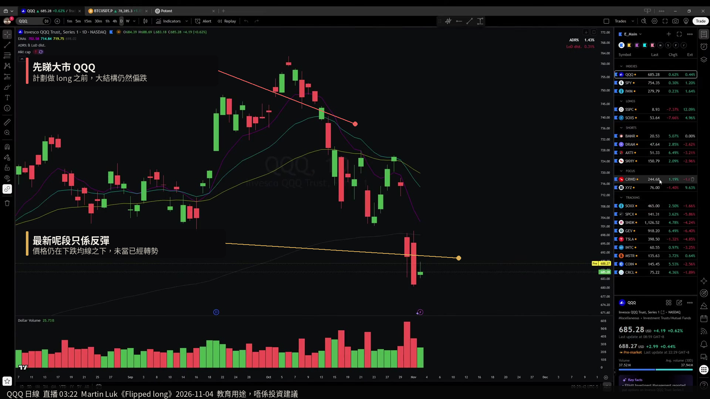
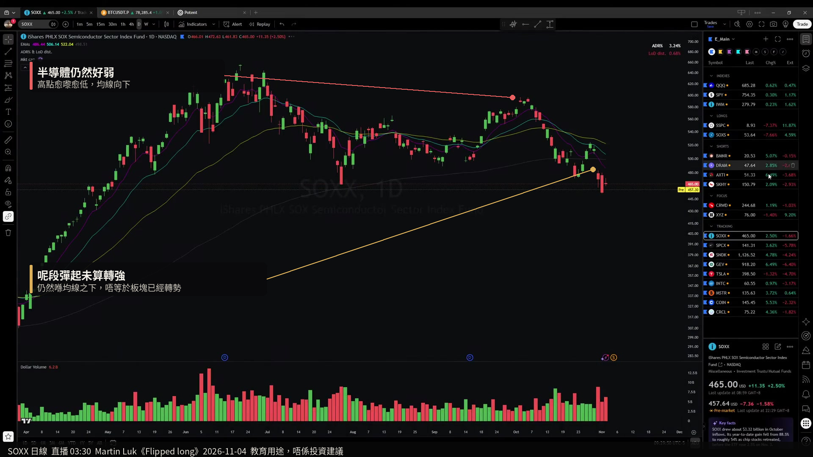

概要
計劃做 long 之前，先睇大市同弱勢板塊
呢一段由 03:18 開始。佢先話今日有啲趕，計劃咗一啲 potential longs，跟住結論係半導體仍然好弱。畫面先後出現 QQQ 日線同 SOXX 日線；中間佢快速翻過其他品種，但有分析意思嘅，係呢兩幅日線。
圖上嘅中文註解係之後加上嘅讀圖說明，唔係直播畫面原本已有嘅字。以下「原話」同「點樣讀」分開。
圖一
QQQ 日線：先睇大市
直播 03:22

原話
Today is a little bit of rush. I did plan some potential longs today. It looks like the semis is still remains like remains pretty weak. I don't know I
今日有啲趕。我本來計劃咗今日做一啲 potential longs。睇落半導體仍然好弱。我唔知呀。
「I did plan some potential longs today」出現嗰陣，畫面主要係 QQQ 日線。講 semis 仍然弱嗰陣，主要係 SOXX 日線，見下圖。
點樣讀
呢一步係先睇大市。QQQ 日線高點愈嚟愈低，均線向下，最新呢段升只係反彈，價格仍在下跌均線之下。
呢啲結構觀察係讀圖說明，唔係佢逐句講出 lower highs。原話只係話計劃咗 longs，同半導體仍然弱。
圖二
SOXX 日線：半導體仍然好弱
直播 03:30

原話
It looks like the semis is still remains like remains pretty weak.
睇落半導體仍然好弱。
點樣讀
SOXX 日線同 QQQ 一樣，大結構偏弱：高點愈嚟愈低，均線向下。右面有一段彈起，但仍然喺均線之下。
佢冇講「單一次較低時間框架嘅 bounce 唔等於轉勢」呢句口訣。呢幅日線要學嘅係：有彈起，唔等於弱勢板塊已經轉強。呢句係讀圖說明，唔係原話。
附註
注意事項
- 03:18 前後佢話 today is a little bit of rush，畫面確實快速翻過 BTC、HYPE、SOL 等，之後先較多次停喺 QQQ 同 SOXX。本頁只收有分析意思嘅兩幅日線，唔做翻圖圖冊。
- 畫面睇唔到成交價、倉位大細或者損益，所以唔寫死呢啲數字。
免責聲明：呢份係教育拆解，唔係投資建議，亦唔好當作買賣指示。